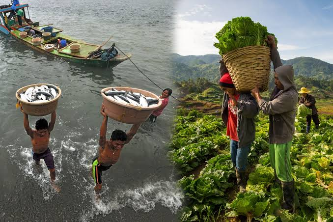

Welcome to Agriculture and Fisheries!

Agriculture and Fisheries play an important role in our everyday lives. They provide essential food, create employment opportunities, and support the growth of our economy. Our goal is to promote awareness, share knowledge, and encourage sustainable practices that help protect our natural resources. Agriculture in the Philippines is a foundational pillar of the national economy, a major source of livelihood in rural areas, and a key contributor to national food security.